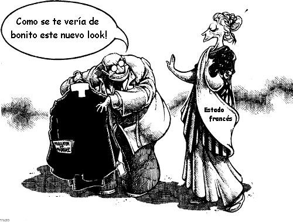

El 9 de Diciembre de 1905 se votaba la ley de Separación de las Iglesias y el Estado que ponía fin a más de un siglo de concordato, llegando así al final de la obra de secularización iniciada por la Revolución. Francesa. Proclamando como principio institucional que “La República asegura la libertad de conciencia”, la laicidad prohibía toda financiación directa o indirecta de las religiones en el artículo 2 de la ley: “La República no reconoce, no subvenciona, ni financia ningún culto”.
Los defensores de la democracia política han necesitado tres ocasiones para instaurar esta separación: en 1795, en 1871, después en 1905. Dos veces, los partidarios de la opresión con Bonaparte en 1801, posteriormente Thiers después del aplastamiento de la Comuna, echaron abajo esta construcción de la libertad. Desde 1905, muchos otros han restablecido también como una causa de grave importancia el principio de separación de las Iglesias y el Estado.
Después de la Comuna de París y de la semana sangrienta, el movimiento obrero renacía uniendo su lucha de emancipación social a la de los republicanos para la llegada de la laicidad escolar y seguidamente la del Estado, para hacer triunfar la absoluta libertad de conciencia. La separación de las Iglesias y el Estado era el resultado de la gran Revolución francesa que había proclamado la exigencia de la igualdad de los derechos ciudadanos.
Jean Jaurés podía así decir: “La ley de separación es la marcha deliberada del espíritu hacia la plena luz, la plena ciencia y la entera razón”. Y Ferdinand Buisson, presidente de la Comisión parlamentaria encargada de elaborar la ley añadirá: “La separación no es la última palabra de la revolución social, pero constituye innegablemente la primera”.
¡Es preciso restaurar y extender la ley de 1905!
Los golpes más duros contra los principios de separación han sido dirigidos por Vichy, a través de las leyes del 5 de Febrero de 1941, del 8 de abril y del 25 de Diciembre de 1942 que devolvieron a la Iglesia católica un poder considerable, financiero, obiliario e inmobiliario, y permitieron la vuelta de las congregaciones. Todas esas medidas antilaicas se mantuvieron después de la liberación.
Actualmente, a excepción de Alsace Moselle (el concordato más antiguo existente en Europa asociado a la aplicación integral de la ley clerical del vizconde de Falloux de 1850 y de leyes que datan de la anexión alemana de 1870 a 1918) y los decretos Mandel de 1939 para los territorios de Ultramar, los gobiernos que se han sucedido en el poder desde 1945 han violado deliberadamente la laicidad de la Escuela y el Estado.
Haciendo votar leyes antilaicas, los gobiernos sucesivos de la Cuarta a la Quinta República, han atacado gravemente la ley de 1905. Hoy, es un presupuesto equivalente a 200.000 empleos que se desvían de la Escuela pública en provecho de la escuela privada esencialmente católica.
¡La laicidad, garantizada por la separación de las Iglesias y el Estado es la democracia!
La democracia política impone que la República no distingue más que ciudadanos y no comunidades. Es la condición fundamental para asegurar una verdadera libertad de conciencia. A la inversa, el comunitarismo no reconoce a los ciudadanos y no considera más que súbditos. La noción de derechos es reemplazada por la de deberes ligados a una pertenencia comunitarista presupuesta e inflexible.
El respeto absoluto de la separación de las Iglesias y el Estado impone el no reconocimiento de las religiones en la escuela laica y en las servicios públicos. Este principio prohíbe todo proselitismo religioso por sus signos, insignias y emblemas así como la enseñanza de catequesis en la Educación Nacional. La laicidad prohíbe toda financiación directa o indirecta de edificios con vocación de culto.
La democracia impone que la religión sea exclusivamente un asunto privado.

Cuando la República se fundó nuevamente en 1870, cuando se afirmó en 1877 y en 1879, instauró en un mismo movimiento la laicidad escolar y la laicidad del Estado. Proclamó como un principio intangible el respeto a la absoluta libertad de conciencia.
Al mismo tiempo, reconocía la total libertad sindical en 1884, es decir el derecho a los obreros de organizarse con toda la independencia para la defensa de sus intereses frente a las clases dominantes. Se afirmaba también al mismo tiempo la plena y entera libertad de intervenir a los partidos políticos, sin la cual no puede haber una verdadera democracia. La afirmación de las libertades democráticas y políticas se acompañaba de conquistas sociales de envergadura.
Los principios fundamentales y las formas de puesta en práctica de la laicidad tienen vocación de ser exportadas en el plano internacional
La laicidad de la Escuela y del Estado, garantizada por la ley de 1905, es indisociable de la República una e indivisible. No se puede defender una sin defender la otra. La libertad absoluta de conciencia es una de las garantías fundamentales de la igualdad y los derechos de todos los ciudadanos.
Defender y promover la ley de 1905
Si te interesa constituir hacer parte de un Comité de unión de llamamiento a los laicos para la defensa de la ley de separación de las Iglesias y el Estado del 9 de Diciembre de 1905 puedes enviar un correo electrónico con tus datos a:
y una copia à :
Recuerda que este Cómite llama a todos los laicos de todos los departamentos a refrendar este llamamiento y a preparar la manifestación nacional el sábado 10 de Diciembre de 2005 en París, en dirección a la Asamblea Nacional.:
¡Para la restauración de la ley de 1905!
¡Para la derogación del estatuto clerical de Alsacia Moselle!
¡Por el respeto del principio: “Fondos públicos a la única Escuela Pública!
¡Para la derogación de todas las leyes antilaicas!
¡Para la llegada de una laicidad sin fronteras!
Primeros firmantes: Andrau René (Ensayista), Barbe (Diseñador), Bellon André (Autor de ” Porqué no soy altermundista; Elogio de la antimundialización “), Bénichou Daniel (Vicepresidente del Comité Laicidad-República), Blondel Marc (Sindicalista, librepensador), Boeglin Edouard periodista y escritor, librepensador en Alsace), Boulmier Christian (Presidente de la asociación del caballero de La Barre), Bourcier François (escenógrafo comediante), Brandmeyer Bernard (Profesor), Cavanna François (Escritora y periodista), Chaintron François (Sindicalista profesor, librepensador), Collin Denis (Filósofo), Combes André (Historiador), Coutel Charles (Universitario republicano), De Bonfils Christian (Sindicalista), Eyschen Christian (Redactor jefe de la Raison - mensual de la Libre Pensée, representante de l’IHEU en la UNESCO), Forget Philippe (Director de la revista El arte de Comprender), Gluckstein Daniel, Gourdot Paul ((delegado general de “República social “), Guglielmi Philippe (Presidente de honor de Laïcité-Liberté, Alcalde adjunto de Romainville -93), Hébert Alexandre (Anarcosindicalista), Hébert Patrick (Sindicalista, librepensador), Jenet Claude (Sindicalista, librepensador), Jbil Kébir (Presidente del Movimiento des Maghrebíes Laicos en Francia), Kessel Patrick (Presidente de Honor del Comité Laicidad República), Kotovtchikhine Stéphane (Maestro de conferencia de Historia del Derecho, antiguo Vicepresidente de la Universidad de Bourgogne), Labrégère Charlette (ex-encargado de misión cerca del Rector de la Academia de Rennes), Labrégère René (Presidente de Honor de la Libre Pensée), Lafouge Jacques (Humanista laico, librepensador), Le Fur Catherine (Secretaria General de la Libre Pensée), Mahé Serge (Hussard negro y rojo), Matisson Jean-Marie (Presidente del Comité Laicidad-República), Nardin Bruno (Secretario Nacional del Comité Laicidad-República), Pecker Jean-Claude (Profesor del Collège de Francia, Miembro da la academia de las Ciencias), Pena-Ruiz Henri (Filósofo), Pion Etienne (presidente de Europa y Laicidad – CAEDEL), Porset Charles (Investigador del CNRS, Universitario en Paris-Sorbonne), Prévotel Marc (Anarcosindicalista, librepensador), Puaud Philippe (antiguo diputado, librepensador), Rajsfus Maurice (Historiador), Raynaud Jean-Marc, Ragache Jean-Robert (Historiador), Robyn Johannés (Presidente dela Unión de Ateos), Rochard Poky (Publicista, librepensador), Salamero Joachim (Presidente de la Federación nacional de la Libre Pensée), Sandri Roger (Sindicalista), Sérac Michel, Singer Claude (Director l’Idée Libre - revista cultural de la Libre Pensée),Viry-Babel Roger (Profesor de Universidades), Vovelle Michel (Historiador).
Volver a la sección Sociedad y religión
Comentarios
Comments powered by Disqus